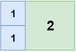
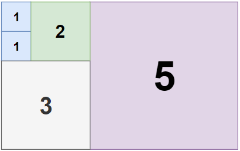

1240. 铺瓷砖
回溯：永远铺「最左上的空格」（铺法盖住它的那块砖左上角必然就在这），从大到小试各种正方形；已用块数不减于当前最优就回溯。
思路
- 关键结论：任何铺法里，盖住「最左上空格」的那块砖，左上角必然恰好在它（上方、左方都空不出来）。所以只需在这个格子枚举砖的尺寸，解空间不漏。
- 尺寸从大到小试：早点找到小
best，后面的分支剪得快。 - 剪枝：进入递归先判
used >= best，直接放弃。 - 面积型网格
n > m时交换成行 ≤ 列，进一步缩小搜索空间（答案对转置不变）。
图解
最优解
1class Solution {2 private int n, m, best;3 private boolean[][] filled;4 5 public int tilingRectangle(int n, int m) {6 if (n > m) { int t = n; n = m; m = t; } // 行 ≤ 列，搜索空间更小7 this.n = n;8 this.m = m;9 filled = new boolean[n][m];10 best = n * m; // 全用 1×1 兜底11 dfs(0);12 return best;13 }14 15 // 找最左上的空格铺：任何铺法在这个格子上的那块砖，左上角必然就在这里16 private void dfs(int used) {17 if (used >= best) return; // 不会更优，剪掉18 int r = -1, c = -1;19 outer:20 for (int i = 0; i < n; i++) {21 for (int j = 0; j < m; j++) {22 if (!filled[i][j]) { r = i; c = j; break outer; }23 }24 }25 if (r < 0) { // 铺满了，刷新答案26 best = used;27 return;28 }29 int maxS = Math.min(n - r, m - c);30 for (int s = maxS; s >= 1; s--) { // 先试大的，早点找到好答案帮剪枝31 if (!fits(r, c, s)) continue;32 fill(r, c, s, true);33 dfs(used + 1);34 fill(r, c, s, false);35 }36 }37 38 // (r,c) 开头的 s×s 区域是否全空39 private boolean fits(int r, int c, int s) {40 for (int i = r; i < r + s; i++) {41 for (int j = c; j < c + s; j++) {42 if (filled[i][j]) return false;43 }44 }45 return true;46 }47 48 private void fill(int r, int c, int s, boolean v) {49 for (int i = r; i < r + s; i++) {50 for (int j = c; j < c + s; j++) {51 filled[i][j] = v;52 }53 }54 }55}题目
给定一个大小为 n x m 的长方形，返回贴满矩形所需的整数边正方形的最小数量。
示例 1：

输入：n = 2, m = 3 输出：3解释：需要3个正方形来覆盖长方形。2个1x1 的正方形1个2x2 的正方形
示例 2：

输入：n = 5, m = 8 输出：5
示例 3：

输入：n = 11, m = 13 输出：6
提示：
1 <= n, m <= 13
题面取自力扣当前版本。
数据快照 2026-11-04。题面版权归力扣所有，本站点仅供本人学习使用，请勿对外发布。